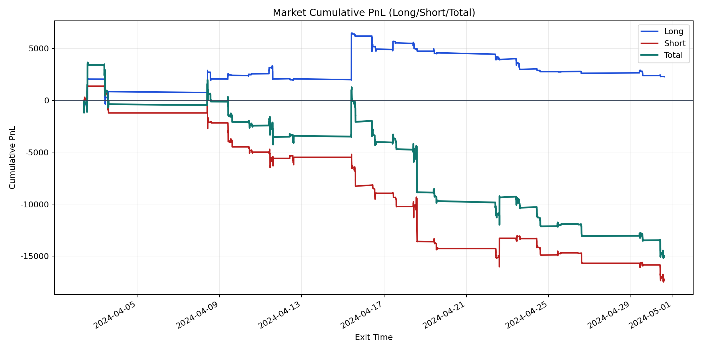
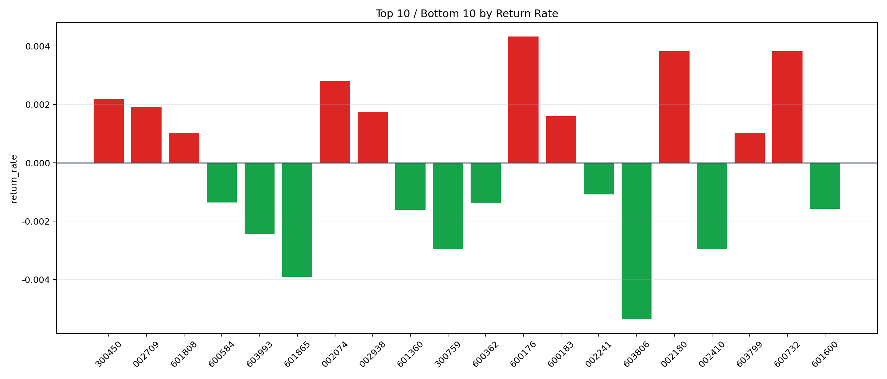

| repo_root | /home/haoranyou/data/output/alpha0.4_1w_5s_3ticks_index_filter/index_weights_300 |
|---|---|
| period_months | 1 |
| period_label | 2024-04-02_to_2024-04-30 |
| start_time | 2024-04-02 09:50:57 |
| end_time | 2024-04-30 14:45:02 |
| n_trades | 3528 |
| n_symbols | 30 |
| total_pnl | -14969.722699999978 |
| long_total_pnl | 2270.494500000019 |
| short_total_pnl | -17240.2172 |
| total_entry_notional | 32460991.0 |
| long_entry_notional | 10560667.0 |
| short_entry_notional | 21900324.0 |
| total_return_rate | -0.0004611603724605936 |
| long_return_rate | 0.0002149953691371974 |
| short_return_rate | -0.0007872128832431885 |
| top_symbols_by_return | ["600176", "600732", "002180", "002074", "300450", "002709", "002938", "600183", "603799", "601808"] |
| bottom_symbols_by_return | ["603806", "601865", "002410", "300759", "603993", "601360", "601600", "600362", "600584", "002241"] |

